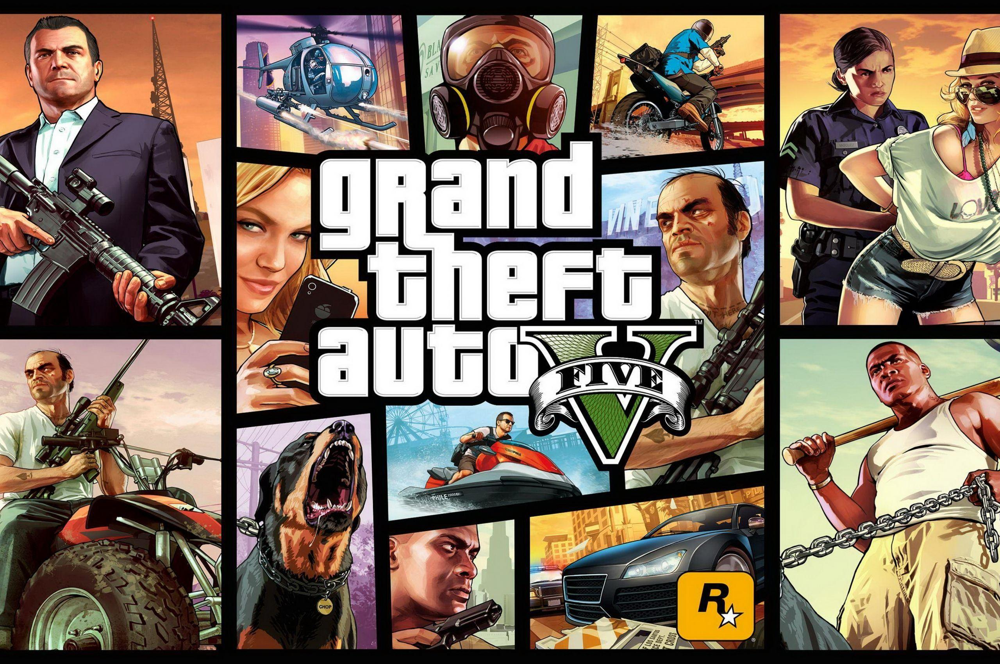

Grand Theft Auto V is set in the fictional state of San Andreas, where the lives of three very different criminals intersect. The story begins in 2004 with a failed heist in the town of Ludendorff, North Yankton. Michael Townley, one of the robbers, fakes his death and enters witness protection under the name Michael De Santa. Nine years later, Michael lives in Los Santos with his dysfunctional family. He meets Franklin Clinton, a young repo man looking to escape his gang life. The two form a bond after Franklin attempts to repossess Michael’s son’s car. Meanwhile, Trevor Philips, Michael’s former partner who believed Michael was dead, discovers the truth and reunites with him. The trio begins working together on a series of heists, each more dangerous than the last. They face threats from various factions, including corrupt government agents, rival gangs, and powerful criminals. Throughout the story, each character deals with personal struggles: Michael tries to mend his family relationships, Franklin seeks a better life, and Trevor grapples with his chaotic nature. The narrative explores themes of loyalty, betrayal, and the pursuit of the American Dream, culminating in a final choice that determines the fate of the three protagonists.
